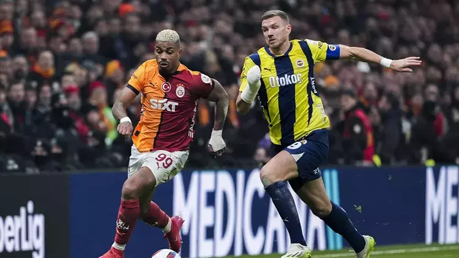

Derbide Kazanan Yok
Süper Lig'in 25. haftasında derbi heyecanı yaşandı. Galatasaray, Rams Park'ta Fenerbahçe'yi konuk etti.
Mücadele 0-0 sona erdi ve iki takım da sahadan birer puanla ayrıldı.
Karşılaşmanın ilk yarısından gol sesi çıkmadı ve devreye golsüz eşitlikle girdi.
İkinci yarıda tempo artarken iki takım da aradığı golü bulamadı.
Bu sonuçla birlikte 4 maçlık galibiyet serisi sona eren lider Galatasaray'ın puanı 64 oldu. Ligde 7 maç sonra kazanamayan Fenerbahçe ise 58 puanla zirvenin 6 puan gerisinde kaldı.